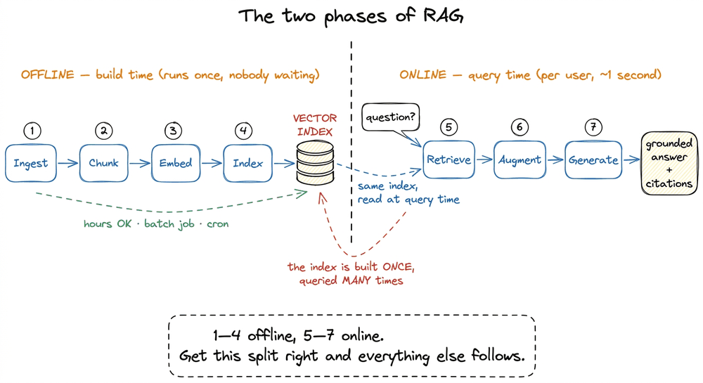
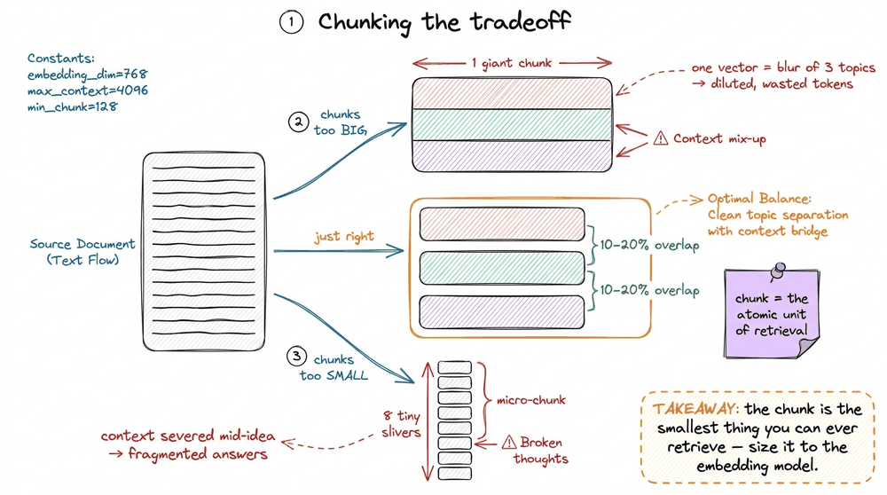
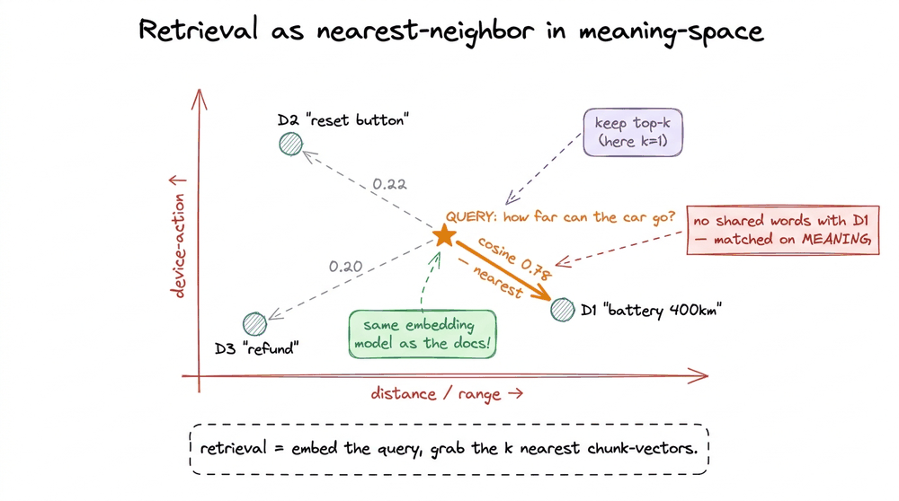
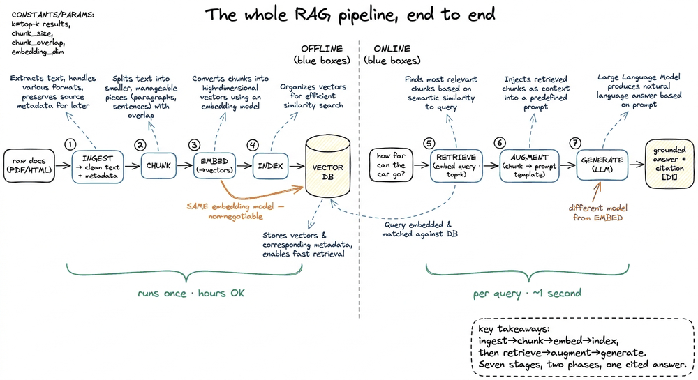
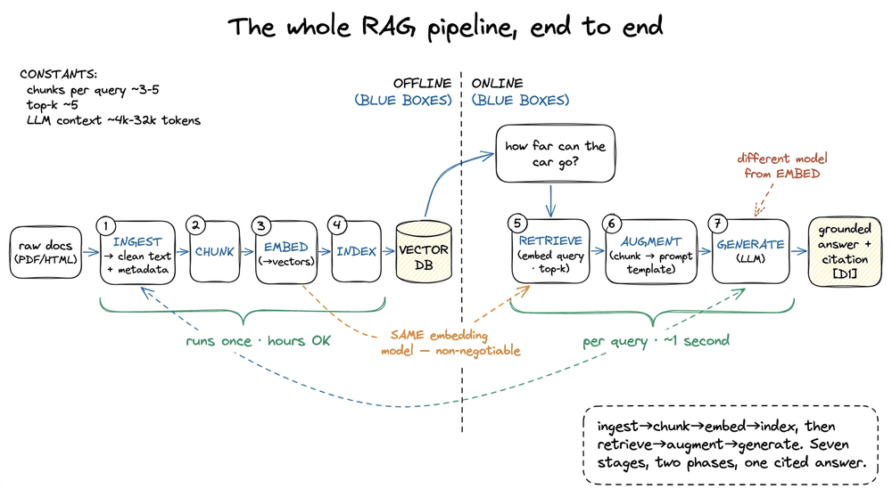

The RAG Pipeline End to End
📝 33 annotationsThe RAG Pipeline End to End
In the last chapter we defined the idea: retrieval-augmented generation means the model answers from context you fetch at query time instead of from the frozen facts baked into its weights. That is the thesis. This chapter is the machine that makes the thesis true. Because "retrieve some context and put it in the prompt" hides a surprising amount of engineering, and if you cannot draw the whole path from a raw PDF to a grounded answer, you cannot debug it when — and it is when, not if — it returns confident nonsense.
So let me build the pipeline the way I actually build it: as one diagram I can point at, split cleanly into two halves that run at completely different times, on completely different hardware, for completely different reasons. Once that split is in your bones, every later chapter in this book slots into exactly one box.
The one split that organizes everything
Here is the single most useful fact about a RAG system, and almost every beginner mistake comes from missing it: the pipeline runs in two phases that happen at different times.
The first phase is indexing — sometimes called the build or offline phase. You take your documents, chew them into vectors, and load them into a searchable index. This happens before any user shows up. It can take hours. It runs on a batch job, a nightly cron, an ingestion worker — nobody is waiting on a spinner.
The second phase is retrieval and generation — the query or online phase. A user types a question, and you have maybe a second or two to embed it, search the index, stuff the winners into a prompt, and stream back an answer. Someone is watching the spinner. Every millisecond is felt.

figure rendering · The seven stages split into an offline build phase (ingest, chunk, embWhy does this split matter so much? Because it tells you where your costs and your latency live. Embedding a million chunks is expensive, but you pay it once, offline, and amortize it forever. Embedding one query is cheap, but you pay it on every single request, so it sits on your latency budget. Confuse the two and you will either try to re-index the whole corpus on every query (slow and broke) or forget that the query itself needs embedding (broken retrieval). Keep them separate and the seven stages line up in order. Let me walk each one with a concrete example small enough to hold in your head.
There is one trap hiding in that same split, and it is the failure that catches almost every team the second time. Because the index is built once and then frozen, it quietly goes stale: the moment your documents change, the index no longer reflects them, and it will keep confidently serving the old world. Someone edits the refund policy from thirty days to sixty, the wiki page updates, and your RAG system keeps answering "thirty" for weeks, because nobody re-ran the offline phase. The pipeline has no way to notice on its own. This is why index freshness becomes a first-class production concern (covered in Shipping RAG to Production): you need an ingestion job that re-embeds and re-indexes changed documents on a schedule, or a change feed that does it incrementally. The napkin version of the tradeoff is stark. Suppose re-embedding your whole corpus costs a few dollars and an hour of batch time; running it nightly is trivial, running it on every query is insane, and running it never is the silent bug. The right cadence lives somewhere between "hourly cron" and "event-driven on document change", and choosing it is the same offline/online reasoning applied to when, not just where.

figure rendering · When a source document changes, the frozen index keeps serving the oldThe worked example: three tiny documents
Forget a million PDFs. Imagine your entire knowledge base is three sentences, sitting in a support wiki:
D1: "The Model X battery lasts 400 kilometres on a full charge."D2: "To reset the Model X, hold the power button for ten seconds."D3: "Our refund window is thirty days from delivery."
A user asks: "how far can the car go?" Watch that question travel through all seven stages. Nowhere in the documents do the words "how far" or "car" appear — D1 says "kilometres" and "Model X". A keyword search would return nothing. RAG will still find D1, and the reason it can is the whole point of stages 3 through 5.
Stage 1 — Ingest: turn raw sources into clean text
Real documents do not arrive as tidy sentences. They arrive as PDFs with two-column layouts, HTML wrapped in navigation menus, scanned images that need OCR, DOCX files with tracked changes.11 This stage is deceptively hard and gets its own whole section later — see Ingestion Is the Hard Part. A brochure PDF where columns interleave into word-salad will silently poison every downstream stage, and no amount of clever retrieval recovers from garbage text. Ingestion parses each source into plain text plus metadata — the source filename, page number, a URL, a timestamp. That metadata rides along with the text forever, so that at the very end the model can cite "from manual.pdf, page 12." For our toy example the text is already clean, so D1, D2, D3 pass through untouched, each carrying a tiny tag like {source: "wiki", id: "D1"}.
Stage 2 — Chunk: cut documents into retrieval units
You do not retrieve whole documents and you do not retrieve single sentences — you retrieve chunks, and the chunk is the atomic unit of retrieval. Everything you fetch is a whole chunk; nothing smaller ever comes back. Our documents are one sentence each, so each is already its own chunk. But a 40-page manual would be split into passages of, say, a few hundred tokens each, usually with a little overlap between neighbours so an idea straddling a boundary is not sliced in half.
The size of that chunk is a genuine tradeoff, and it is worth stating now because it echoes through the rest of the book. Too large, and the chunk's vector becomes a blurry average of several topics — its meaning gets diluted and you waste context tokens on irrelevant text. Too small, and you sever the context a sentence needs to make sense, fragmenting the answer. And the right size is not absolute — it is chosen relative to the embedding model's context window, since a model that reads only 256 tokens will silently truncate a 1,000-token chunk. A whole section, Chunking, is devoted to getting this knob right.

figure rendering · Chunk size is a tradeoff: too big dilutes the vector, too small seversStage 3 — Embed: turn each chunk into a vector
Now the magic step. An embedding model reads a chunk and emits a fixed-length dense vector — a list of, say, 1,536 floating-point numbers — that encodes the chunk's meaning.22 1,536 is the dimensionality of OpenAI's text-embedding-3-small; text-embedding-3-large gives 3,072, and the tiny Sentence-Transformers all-MiniLM-L6-v2 gives 384. Higher dimension is not automatically better — it is a cost/accuracy tradeoff we unpack in Choosing an Embedding Model. The defining property is that semantic similarity becomes geometric closeness: chunks that mean similar things land near each other in this high-dimensional space, even when they share no words.
To keep the arithmetic visible, pretend our embedding model outputs just two dimensions instead of 1,536 — a "distance/range" axis and a "device-action" axis:
D1"battery lasts 400 km" →[0.9, 0.1](all about range, no action)D2"hold power button to reset" →[0.1, 0.9](all action, no range)D3"refund within thirty days" →[0.2, 0.2](neither)
These vectors are computed offline, once, and stored. Note the iron rule that appears everywhere in RAG: you must embed queries and documents with the same model. Embed your documents with one model and your queries with another and their vectors live in incompatible spaces — the geometry is meaningless and retrieval collapses.
Stage 4 — Index: store vectors so you can search them fast
You now have a pile of vectors. At query time you will need to find the ones nearest a query vector — but a brute-force scan comparing the query against every stored vector is O(N) per query, which is fine for our three documents and hopeless for ten million. That is why production systems reach for Approximate Nearest Neighbor (ANN) indexes like HNSW (a navigable graph) or IVF (cluster-then-search), which trade a sliver of recall for orders-of-magnitude speed — the whole story is in Vector Indexes and ANN Search. So you load the vectors into a vector index — often inside a vector database like FAISS, Chroma, Qdrant, Pinecone, or pgvector — which builds a data structure that answers "give me the closest vectors" in milliseconds instead of a full scan. This index is the frozen output of the offline phase and the input to everything that follows. Build it once; query it forever.
That completes indexing. Our three vectors now sit in the index, waiting. The offline phase is done.
The online phase: a question arrives
Stage 5 — Retrieve: embed the query, pull the top-k
The user asks "how far can the car go?" The very first thing we do is run that question through the same embedding model from stage 3. In our two-dimensional cartoon, "how far / range" maps to something like [0.85, 0.15] — heavy on the distance axis, light on action. Now we compare it against the three stored vectors using a similarity metric, most commonly cosine similarity — the cosine of the angle between two vectors, which for normalized vectors equals their dot product and ranges from −1 to 1, where 1 means identical direction.33 Cosine is the default for text because it ignores vector length and cares only about direction — meaning. Dot product and Euclidean distance are the other options; when and why to pick each is Similarity Metrics: Cosine, Dot, Euclidean. Doing the napkin math on the dot products:
- query ·
D1= 0.85·0.9 + 0.15·0.1 = 0.78 ← highest - query ·
D2= 0.85·0.1 + 0.15·0.9 = 0.22 - query ·
D3= 0.85·0.2 + 0.15·0.2 = 0.20
D1 wins decisively, even though the query and D1 share not a single word. That is why RAG beats keyword search: it matches on meaning, not spelling. We keep the top-k results — here k = 1, in practice usually 3 to 10 — and hand them forward.

figure rendering · The query is embedded and placed in the same space as the chunks; theStage 6 — Augment: assemble the prompt
Retrieval handed us D1. Now we augment — we build the actual prompt the LLM will see by weaving the retrieved chunk into a template. Concretely, it looks like this:
System: Answer ONLY using the context below. If the answer is
not in the context, say "I don't know." Cite the source id.
Context:
[D1 | source: wiki] The Model X battery lasts 400 kilometres on a full charge.
Question: how far can the car go?This assembly step is where two production realities bite. First, the context window is a finite budget: the system prompt, every retrieved chunk, and the question all have to fit, so a large k can blow the budget or, worse, bury the good chunk in noise.44 There is a documented failure called "lost in the middle" — models attend best to the start and end of a long context and worst to the middle. Where a chunk sits in the assembled prompt genuinely affects whether the model uses it. That shapes Prompt Augmentation and Context Assembly. Second, that "answer ONLY using the context / say I don't know" instruction is not decoration — it is the grounding contract that keeps the model from wandering back into its parametric memory and inventing an answer.
Stage 7 — Generate: the grounded answer
Finally the assembled prompt goes to the generation model — a normal LLM, and crucially a different model from the embedding model.5 This is a common beginner conflation: the embedding model encodes text into vectors for search; the generation model writes the prose answer. They are almost always separate models with separate jobs, separate costs, and separate failure modes. Do not mix them up. It reads the context and produces:
"The Model X can travel 400 kilometres on a full charge. [source: wiki/D1]"
Grounded in a real document, traceable to its source, and — because we told it to say "I don't know" — safely silent if the retrieval had missed. That is a complete RAG round-trip: seven stages, one honest, cited answer.

figure rendering · The complete pipeline in one view: four offline stages build the indexThe takeaway, and where each stage goes next
If you remember one thing, remember the shape: RAG is seven stages in two phases — ingest, chunk, embed, index run offline to build the vector index; retrieve, augment, generate run online to answer each query — and the embedding model is the bridge that must be identical on both sides. Every chapter that follows is a deep zoom into exactly one of these seven boxes. When retrieval returns garbage, you now have a checklist: was the ingestion clean, were the chunks the right size, did you embed the query with the same model, is the index fresh, is k sane, did augmentation bury the chunk, did generation ignore its grounding instruction? A vague "the RAG is bad" becomes a specific stage you can fix.
So the key is: once you can name the stage, you can fix the failure. In the next chapter we stop drawing boxes and make all seven fire at once — we build your first minimal RAG in a handful of lines, so you can watch a real question travel this exact path and come back grounded.